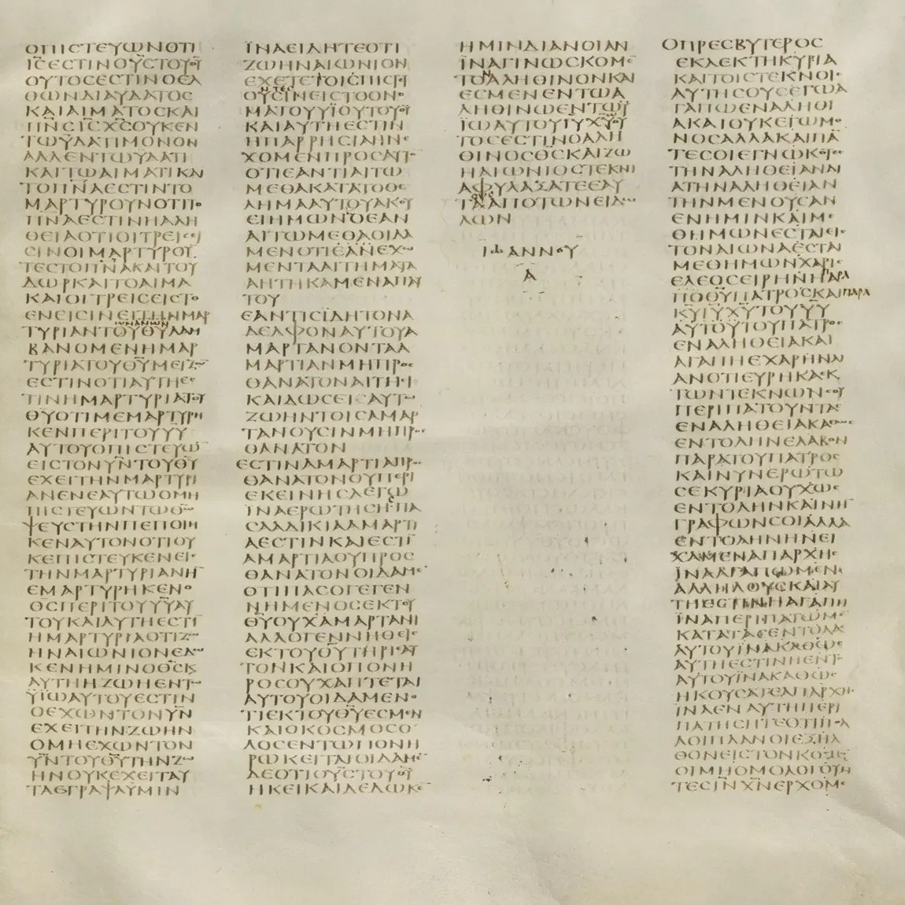
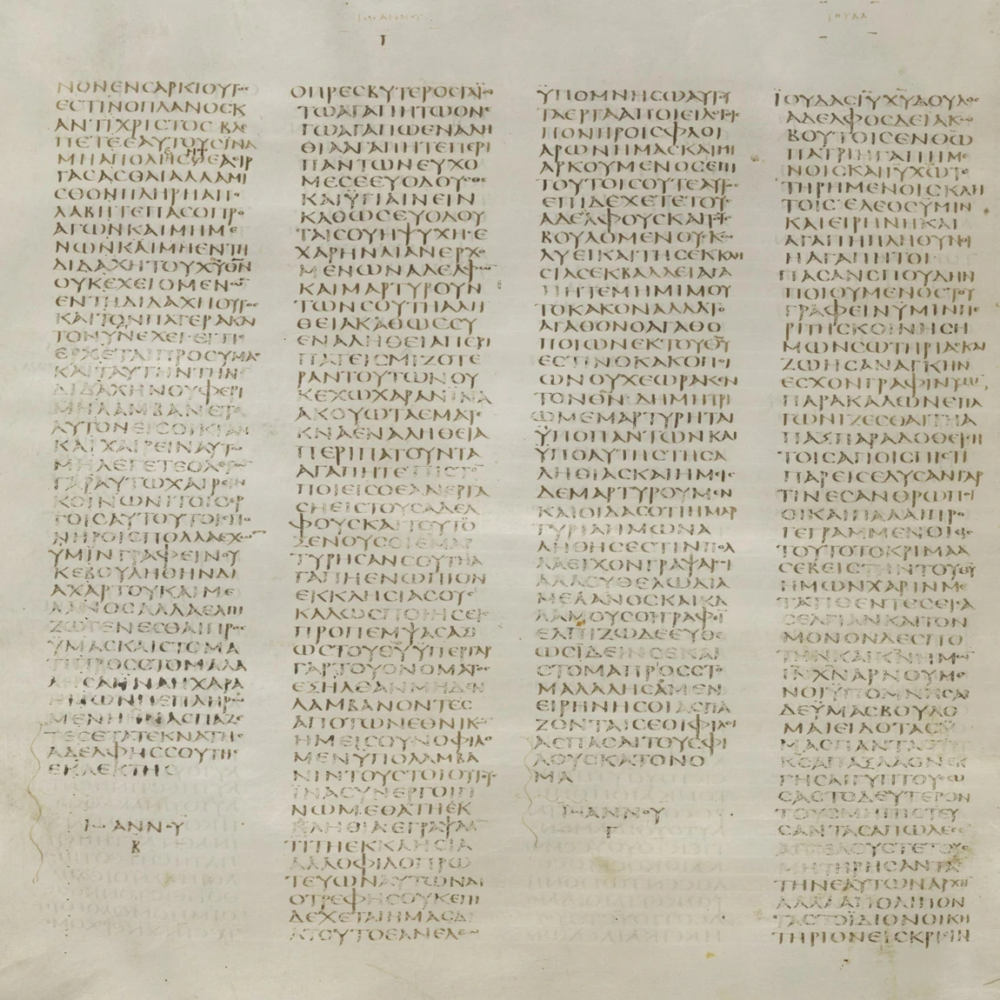
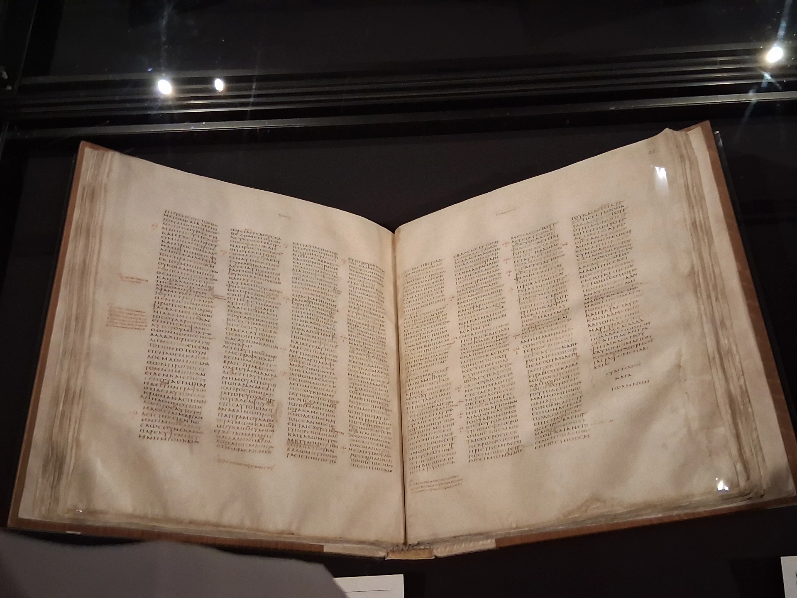
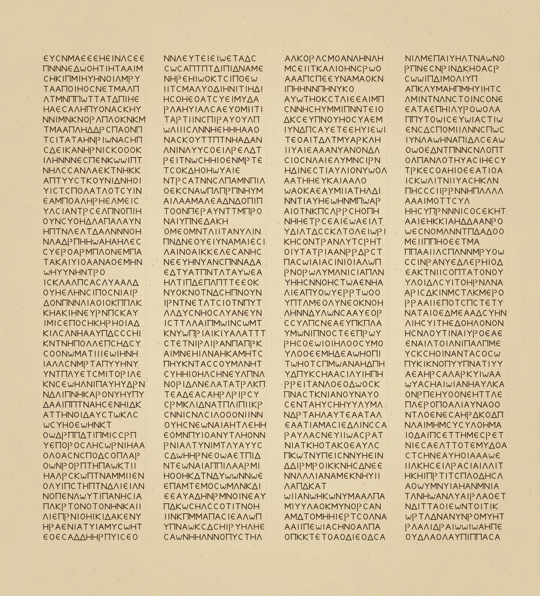
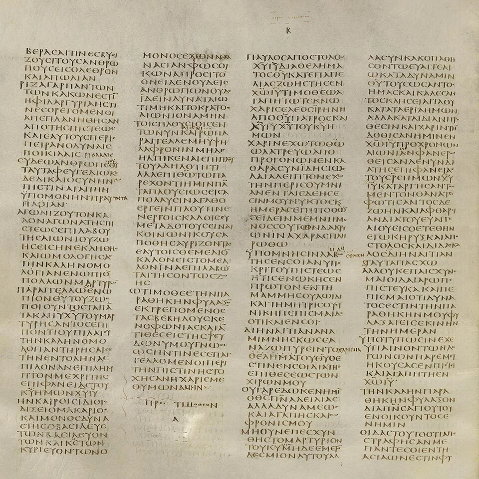

아직 펼치지 않은 카드책이 된 말씀 · 2시나이 사본1,600년도 더 된 성경, 이 한 장에는 무엇이 적혀 있을까요?아주아주 오래된 성경이야. 글자가 어떻게 생겼는지 볼까?
4세기 중엽 → 2009년만든 곳은 몰라요 · 카이사레아 · 지금은 네 곳에
시나이 사본
4세기 중엽, 세 필사가가 구약과 신약을 한 권에 옮겨 썼어요. 그 뒤 여러 사람이 이 책을 고쳐 썼고, 19세기부터 책은 네 곳에 나뉘었어요. 흩어진 낱장을 하나씩 모아 한 권으로 다시 엮어 보세요.
아주 옛날, 세 사람이 커다란 성경책을 손으로 나눠 썼대. 지금 그 책은 네 나라에 나뉘어 있어. 흩어진 조각을 같이 모아 볼까?
검수 전 시안이에요(기준서 1판 · 키트 3판). 장면에는 기록에 있는 것만 옮겼고, 학자들의 추정은 그렇다고 밝혔어요. 조각 모으기의 낱장 그림은 이 안내서가 빗대어 그린 거예요. 상상은 ‘눈 감고 상상해 보기’에서만 해요.
시안 확인용카드 단계 미리 보기
1
세 사람이 나눠 쓴 책
4세기 중엽, 어느 필사실에서 구약과 신약을 한 권에 담는 큰일이 시작됐어요. 그곳이 어디였는지는 기록이 없어요.
쓰기 전에 할 일이 많았어요. 한 쪽에 단을 몇 개 둘지 정하고, 양피지(짐승 가죽을 얇게 다듬은 것)에 단과 줄의 틀을 긋고, 펜과 먹을 챙기고, 일을 나눴어요. 이 책처럼 한 쪽에 네 단을 둔 사본은 지금 아주 드물어요.

쓴 사람은 셋이었다고 학자들은 봐요. 1938년 영국박물관의 학자 밀른과 스키트는 글씨 모양과 철자 버릇, 그리고 책 끝마다 그린 장식으로 세 사람을 가려냈어요.
사진의 왼쪽 아래와 셋째 단 아래를 보세요. 요한2서와 요한3서가 끝난 자리마다 물결 모양 장식(코로니스)과 끝 제목이 있어요. Β와 Γ는 그리스 글자의 둘째·셋째 글자로, ‘요한 2’, ‘요한 3’이라는 뜻이에요. 밀른과 스키트는 이 장식이 사람마다 뚜렷이 달라 ‘사실상 그 사람의 서명’이라고 했어요.
세 사람이 나눠서 이 큰 책을 썼대. 책 하나가 끝나면 꼬불꼬불 물결 줄을 그었어.
물어보기너라면 책 끝에 어떤 모양을 그려서 ‘내가 썼어요’ 하고 표시할래?
2
감옥에서 바로잡은 책
6~7세기 무렵, 한 교정자가 이 책의 사무엘기부터 에스더기까지를 아주 오래된 다른 사본과 맞대어 보며 고쳤어요. 그리고 에스라·느헤미야와 에스더기 끝에 메모를 남겼어요.
메모에 따르면 그 옛 사본은 ‘거룩한 순교자 팜필루스가 손수 바로잡은 책’이었고, 맨 끝에 팜필루스가 직접 쓴 글이 있었어요. 교정자는 그 글을 그대로 옮겨 적었어요.
“고백자 안토니누스가 맞대어 보았고, 팜필루스가 감옥에서 이 책을 바로잡았다.”
에스더기 끝 메모의 마지막 줄(… ἐν τῇ φυλακῇ, ‘감옥에서’) · 스위트(1914)에 실린 그리스어를 이 안내서가 옮김
‘고백자’는 믿음 때문에 고난을 받은 사람을 부르던 말이에요. 팜필루스는 지금 이스라엘의 바닷가 도시 카이사레아에서 큰 도서관을 꾸린 학자예요. 307년 무렵 붙잡혀 꼬박 2년을 감옥에서 지낸 뒤 순교했어요. 함께 일했던 에우세비우스는 그를 ‘우리 시대에 누구보다 거룩한 성경에 진심으로 힘쓴 사람’이라고 적었어요.
그래서 많은 학자는 6~7세기 무렵 이 책이 팜필루스의 도서관이 있던 카이사레아에 있었을 거라고 봐요. 이 책을 고친 손은 4세기의 필사가부터 12세기 사람까지 이어져요. 한 글자를 고치기도 하고, 문장을 통째로 넣기도 했어요.
감옥에 갇힌 사람이 성경을 한 줄 한 줄 바로잡았대.
물어보기옮겨 쓴 책에 틀린 데가 있는지 어떻게 알 수 있을까?
3
자외선으로 본 요한복음의 끝
1933년 12월, 이 책의 가장 큰 몫인 347장이 런던 영국박물관(지금의 영국도서관)에 왔어요. 박물관의 두 학자 밀른과 스키트는 한 장 한 장을 살폈어요.
요한복음이 끝나는 쪽에는 자외선(눈에 안 보이는 빛)을 비춰 봤어요. 처음 쓴 사람은 21장 24절에서 글을 끝내고 끝 장식과 제목까지 그렸어요. 그러고는 그것을 지우고 마지막 25절을 더 쓴 뒤, 장식과 제목을 다시 그렸어요.

25절은 ‘예수께서 하신 일을 낱낱이 적으면 이 세상도 그 책들을 다 두지 못할 것’이라는 구절이에요(요한복음 21장 25절). 19세기의 티셴도르프는 이 절을 다른 사람이 나중에 더했다고 봤는데, 자외선은 처음 쓴 사람의 손이었다고 알려 줬어요.
사진은 2026년 1월 영국도서관 전시실에서 찍은 거예요. 오른쪽 쪽 맨 오른쪽 단 아래, 세 줄짜리 작은 제목이 ‘요한에 따른 복음’이에요.
책이 끝나는 곳에 작은 제목이 있어. 쓴 사람이 한 줄을 더 쓰려고 끝 표시를 지웠다가 다시 그렸대.
물어보기다 그린 그림에 하나를 깜빡했다면, 너는 어떻게 할래?
4
네 곳에서 한 화면으로
처음에 이 책은 적어도 730장, 1,460쪽이 넘는 한 권이었어요. 지금은 400여 장과 조각 40여 점이 남아 네 곳에 나뉘어 있어요. 네 곳의 낱장은 지금도 따로따로 있어요.
2005년, 네 곳의 도서관과 수도원이 힘을 모았어요. 남은 모든 쪽을 사진으로 찍고 글자를 옮겨 적어, 인터넷 위에서 한 권으로 다시 엮는 일이었어요.
아래 그림은 네 곳을 한 장의 낱장에 빗대어 그린 거예요. 조각을 하나씩 눌러 제자리로 모아 보세요.
네 곳에 나뉜 낱장을 하나씩 눌러 한 권의 자리로 모아 보세요.

네 곳을 한 장의 낱장에 빗대어 그린 그림(실제 사본이 아니고, 조각 크기도 실제로 나뉜 양과 달라요) · 이 안내서가 그린 네 단짜리 낱장 · 쪽 모양(네 단, 단마다 48줄)은 시나이 사본을 따랐고 글자는 흉내 낸 획
조각을 누르면 그 낱장들이 지금 어디에, 얼마나 있는지 알려 줘요.
네 곳의 낱장이 한 권의 자리로 모였어요. 2009년, 네 기관도 이렇게 인터넷 위에서 이 책을 다시 엮었어요.
2009년 7월 6일, 런던 영국도서관에서 다시 엮은 사본이 인터넷에 열렸어요. 함께 연 전시의 이름은 ‘양피지에서 픽셀로’였어요. 처음 이틀 동안 누리집에 9,640만 번의 접속이 몰렸어요.
옮겨 적은 글에는 수많은 고친 자국도 함께 담겼어요. 4세기의 필사가부터 이어진 손들을 이제 누구나 화면에서 따라가 볼 수 있어요.
아주 오래된 책 한 권이 네 나라에 나뉘어 있어. 조각을 하나씩 눌러서 다시 모아 볼까?
물어보기흩어진 책을 다시 모으려면 누구누구가 힘을 모아야 할까?
눈 감고 상상해 보기
4세기 중엽, 등잔 불빛이 흔들리는 필사실. 넓은 양피지 위에 단과 줄의 틀이 희미하게 그어져 있어요. 한 사람이 마지막 줄을 쓰고, 물결 장식을 길게 그어 내려요. 곁의 사람이 그 쪽을 받아 들고, 손가락으로 한 줄씩 짚어 가며 읽어요. 이 쪽이 먼 훗날 네 나라로 흩어졌다가 한 화면에서 다시 만나리라는 건 아무도 몰랐어요.
눈을 감아 봐. 등잔불 아래 커다란 양피지가 펼쳐져 있어. 다 쓴 사람이 꼬불꼬불 물결 줄을 쭉 그어. 옆 사람이 한 줄씩 손가락으로 짚으며 읽어.
나의 자리
1,600년 전 누군가 한 글자씩 옮겨 적은 말씀이 지금 내게 닿았다면, 나는 무엇을 다음 사람에게 건네고 싶나요?
좋아하는 말 한 줄을 띄어쓰기 없이 써 볼까?
마음에 닿는 한 줄을 고르거나 직접 써 보세요. 한 줄을 남기면 이 자리의 도장이 찍혀요. 이 기기에만 저장돼요.
더 깊이
궁금한 칸만 펼쳐 읽어도 괜찮아요.
알고 보면

코로니스 책 하나가 끝나는 자리에 긋는 물결 모양 장식이에요. 1디모데서가 끝나는 이 쪽에도 있어요. 학자들은 이런 장식의 모양을 견주어 어느 쪽을 누가 썼는지 가려내요.
철자 버릇 그때 필사가들은 αι와 ε, ει와 ι 같은 글자 짝을 서로 바꿔 쓰곤 했어요. 바꿔 쓰는 버릇이 사람마다 달라서, 그것만으로도 누가 썼는지 알아볼 수 있대요. 밀른과 스키트는 B라고 부른 필사가의 버릇을 ‘점잖은 말로는 설명하기 어렵다’고 적었어요.
2만 7천 군데 영국의 학자 데이비드 파커는 이 책에서 고친 곳을 2만 7천 군데쯤으로 셌어요. 이만큼 많이 고친 초기 성경 사본은 달리 없어요.
1761년의 기록 이탈리아 학자 도나티는 1761년 시나이의 성 카타리나 수도원에서 ‘크고 얇고 고운 네모난 양피지에, 둥글고 아름다운 글씨로 쓴 성경’을 보았다고 적었어요. 이 책을 두고 남은 이른 기록이에요.
책갈피 자국 시나이 수도원에 남은 한 장(민수기)에는 작은 구멍과 눌린 자국이 있어요. 모세가 바위를 쳐서 물을 낸 대목(민수기 20장)을 쉽게 펼치려고 책갈피를 달았던 자국으로 보여요. 읽던 사람의 손도 이렇게 남았어요.
기록마다 다른 점
쓴 사람은 몇? 티셴도르프는 넷(A·B·C·D)으로 봤고, 1938년 밀른과 스키트는 셋(A·B·D)으로 정리했어요. 2009년에 끝난 디지털 사업에서는 넷째 사람의 흔적이 있다는 의견이 나왔어요.
만든 때와 곳 영국도서관 목록은 4세기 2분기~3분기(325~374년)로, 공식 누리집은 4세기 중엽으로 봐요. 만든 곳은 기록이 없어요. 로마·카이사레아·알렉산드리아가 거론되고, 영국도서관 목록은 ‘동지중해(팔레스타인?)’라고 적어요.
카이사레아에 있었을까 교정자의 메모를 근거로 6~7세기 무렵 카이사레아에 있었다고 보는 학자가 많아요. 케니언은 ‘거의 틀림없다’고 했어요. 하지만 파커(2010)처럼 이 추론을 의심하는 학자도 있어요.
팜필루스가 순교한 해 흔히 309년이라고 하지만, 에우세비우스의 기록을 따져 310년 2월로 보는 학자도 있어요.
시나이에 남은 낱장 라이프치히 대학 도서관은 1975년 6월에 12장과 조각 40점이 나왔다고 적고, 수도원은 지금 18장(온전한 것과 조각)을 지킨다고 적어요.
콘스탄티누스의 성경 50권 콘스탄티누스 황제는 카이사레아의 주교 에우세비우스에게 ‘손질한 양피지에, 솜씨 좋은 필사가가 읽기 쉽게 쓴’ 성경 50권을 주문했어요. 시나이 사본이 그 가운데 하나였을 거라는 추측도 있지만, 뒷받침할 증거는 없어요.
직접 가 보기
확인한 날 · 2026년 11월 18일 · 바뀌기 쉬운 정보라 정기적으로 다시 확인해요
347장은 런던 영국도서관에 있어요. 셋째 장면 사진처럼 전시실 유리 상자 안에 펼쳐 둘 때가 있으니, 가기 전에 전시 중인지 도서관에 확인해요.
네 곳의 낱장은 공식 누리집에서 한꺼번에 볼 수 있어요. 쪽마다 사진과 옮겨 적은 글이 함께 나오고, 고친 자국도 옮겨 적어 두었어요.
네 곳의 낱장 모으기 금박
네 곳에 나뉜 조각을 모두 눌러 한 권의 자리로 모으면 카드에 금박이 입혀져요.
런던·라이프치히·시나이·상트페테르부르크의 조각을 모두 모으기
아이와 함께 끝까지 채색
아이와 함께 ‘영화처럼 보기’를 끝까지 보면 카드가 채색돼요.
아이와 함께 ‘영화처럼 보기’를 끝까지 보기
근거 보기 (22)
- 시나이 사본 공식 누리집: 의의 — 이만큼 많이 고친 초기 사본은 없음, 4세기 필사가부터 12세기까지의 고친 자국, 한 글자부터 문장 통째까지
- 시나이 사본 공식 누리집: 만들기 — 쓰기 전 여덟 가지 일(단 정하기·일 나누기·양피지에 틀 긋기·펜과 먹…), 네 단 사본은 드묾, 필사가 셋(넷째 가능성)
- 시나이 사본 공식 누리집: 역사 — 1761년 도나티의 기록(크고 얇고 고운 네모난 양피지, 둥글고 아름다운 글씨)
- 시나이 사본 공식 누리집: 때 — 4세기, 더 좁히면 4세기 중엽(글씨체 연구)
- 라이프치히 대학 도서관: Codex Sinaiticus — 1844년부터 43장, 347장은 1859년 상트페테르부르크에서 영국도서관으로, 러시아 국립도서관의 작은 조각, 1975년 6월 12장과 조각 40점, 2005~2010년 공동 사업, 400여 장과 조각 40여 점
- 영국도서관 소장 목록: Add MS 43725 — 4세기 2~3분기, 347장·380×345mm, 필사가 셋(넷 가능), 필사가와 뒷날 교정자의 고친 자국, 7세기 카이사레아(‘팜필루스 교정자’의 메모, 라이프치히의 에스라·에스더 쪽, 파커의 의심), 1933년 12월 소련 정부에게서 삼, 동지중해(팔레스타인?)
- 스미스소니언 국립아시아미술관: Codex Sinaiticus — 처음 730장 이상, 세 필사가, 아주 많이 고침, 6~7세기의 철저한 교정, 팜필루스 메모, 팜필루스(240~309)의 카이사레아 도서관, 만든 곳 불확실(로마? 카이사레아? 알렉산드리아?), 민수기 낱장의 책갈피 자국
- 스위트, 『그리스어 구약 입문』 3장(CCEL) — 7세기 손이 에스더기에 단 메모, ‘팜필루스가 감옥에서 이 권을 바로잡았다’(그리스어), 307~309년 감옥, 카이사레아 팜필루스 도서관의 헥사플라
- 케니언, 『그리스어 성경 본문』 2장 — 에스라·에스더 끝 메모, 6세기~7세기 초, 그때 카이사레아에 있었음이 거의 틀림없음
- 에우세비우스, 『팔레스타인의 순교자들』 11장(NPNF, CCEL) — 팜필루스는 누구보다 거룩한 성경에 힘씀, 꼬박 2년 감옥, 순교한 해 309년/310년 주석
- 에우세비우스, 『콘스탄티누스의 생애』 4권 36~37장(New Advent) — 손질한 양피지에 솜씨 좋은 필사가가 쓴 성경 50권 주문
- 디르크 용킨트, 「시나이 사본 필사가들의 버릇 연구」(Tyndale Bulletin 56.2, 2005) — 밀른과 스키트(1938): 세 필사가, 책 끝 코로니스 모양과 철자 버릇(αι–ε, ει–ι)으로 가려냄, 필사가들이 처음 고친 사람
- 틴데일 하우스(케임브리지), 「필사가들의 손에서」(2021) — 티셴도르프는 넷(A·B·C·D), 밀른과 스키트는 셋
- 버밍엄 대학 소식(2009년 7월 6일) — 800쪽 넘는 낱장과 조각을 인터넷에서 다시 엮음, 2005년 시작, 영국도서관 전시 「양피지에서 픽셀로」(7월 6일~9월 7일), 고친 자국까지 옮겨 적음, 넷째 필사가의 흔적
- 버밍엄 대학 소식(2019) — 2009년 7월 전자판 공개, 처음 48시간 9,640만 번 접속
- 성 카타리나 수도원 디지털 전시(mused): 시나이 사본의 근대사 — 성 게오르기오스 탑 안 옛 도서관 곁 공간에서 1975년 다시 나옴, 수도원에 18장, 상트페테르부르크의 작은 조각
- Center for Online Judaic Studies(영국도서관 글): 영국도서관의 347장(694쪽)에 신약 전체, 1933년 구입, 처음 책의 절반 남짓이 남음
- 제임스 스냅, The Text of the Gospels(2017) — 요한복음 마지막 절: 24절에서 끝내고 장식·끝 제목을 그렸다가 지우고 25절을 더함, 밀른과 스키트의 자외선 조사
- 제임스 스냅, The Text of the Gospels(2017년 3월 글 모음) — 밀른과 스키트: 코로니스는 사실상 그 사람의 서명, B의 철자
- 제프 리들, 파커 『시나이 사본』(영국도서관, 2010) 소개 — 고친 곳 27,305군데, 티셴도르프의 25절 판단, 자외선으로 확인
- History of Information: 파커(2010, 76쪽) 고친 곳 2만 7천 군데쯤, 콘스탄티누스의 성경 50권과 잇는 추측은 증거 없음
- Wikipedia: Codex Sinaiticus · Pamphilus of Caesarea(길잡이)
그림·사진·소리 출처
‘처음 만나는 기독교 문화’의 깊은 카드예요. 실제 인물의 사진은 쓰지 않았어요. 카드 단계와 남긴 글은 이 기기에만 저장돼요.